This week, I decided to iterate on the ideas from last week that worked, using lights, mirrors and mirror angles as the primary constraints, and experimenting with other materials along the way. I am still between two primary ideas, though I think I have some idea of my preference. The two potential focuses now are: 1. The functional focus -- how can I redirect candle light so that it may be used in a more practical manner? 2. The aesthetic focus -- what kind of enclosure can I create to make beautiful refraction patterns on a surface, perhaps taking advantage of the flickering of the candle? First, I looked at some functional ideas:
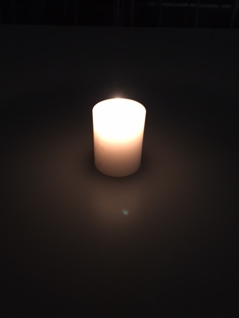 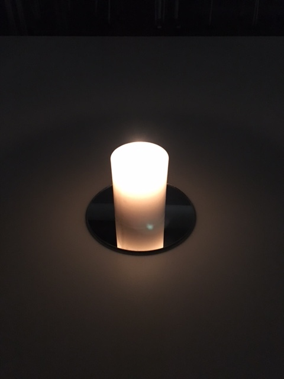 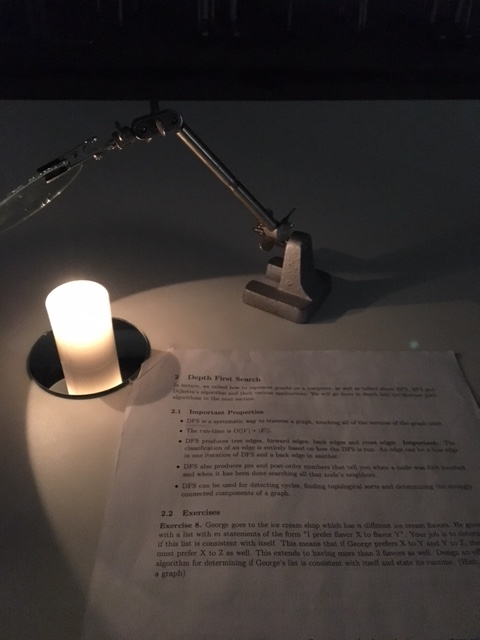The set of images above demonstrate one of my initial 'functional' ideas -- having a mirror mounted to a mobile arm for redirecting light. While physically moving a candle around to change the light direction may be very difficult (without extinguishing the flame or setting something on fire), moving a mirror around the candle seems very doable. There would be no need to motorize this process -- a manually adjustable arm would provide as smooth a user experience as any LED lamp. Next, I decided to take the reflective cone out of a torch, to see if I'd have any luck augmenting the light.
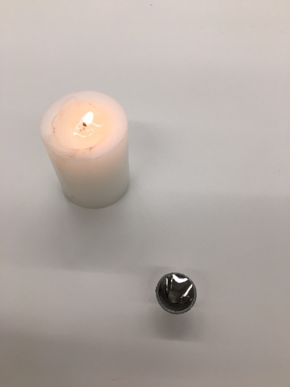 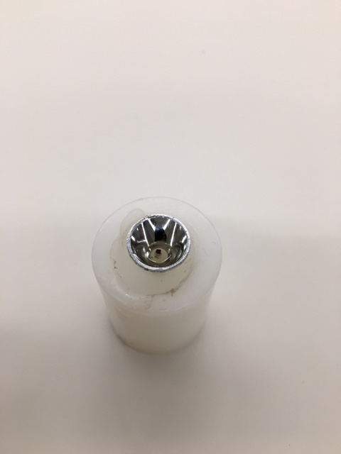Unfortunately, this cone was made of plastic, and, as I tried to light the candle, I melted it. Not dissuaded, I attempted to replicate the cone, on a larger scale, with a cup and some foil.
 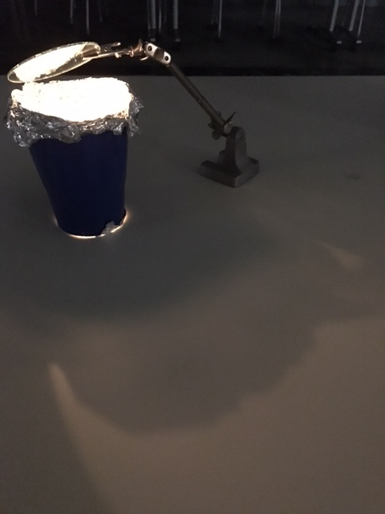
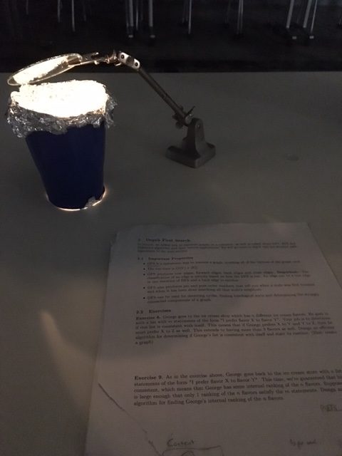
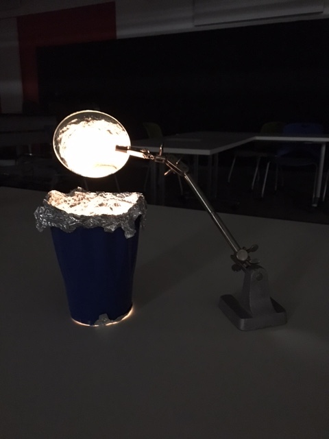
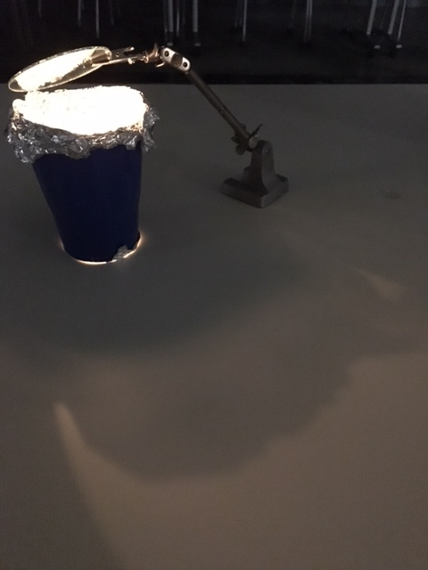
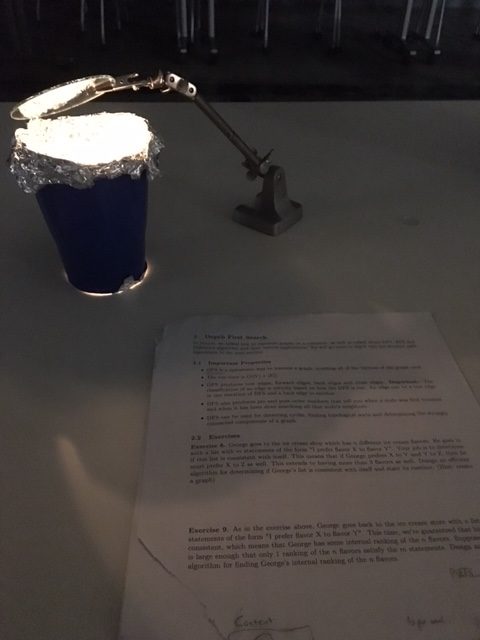
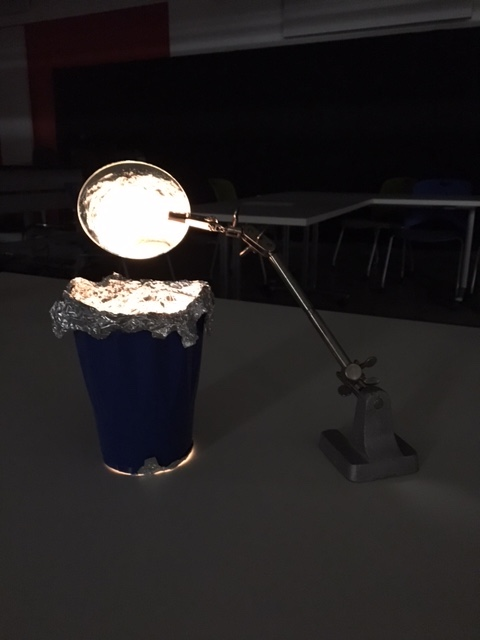
This larger cone created an interesting effect in the interior (the glow was very pleasant), but, the light would not distribute efficiently (even when using mirrors to direct the light). Next, I constructed a mirror piece using 4 smaller mirrors -- the idea being that angling the mirrors around the candle would allow for less light wasted.
 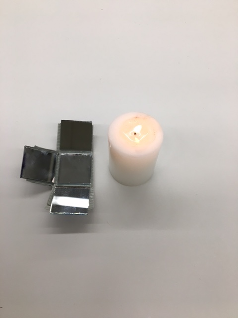
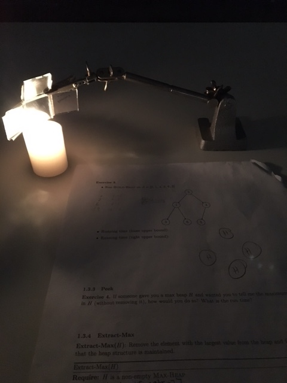
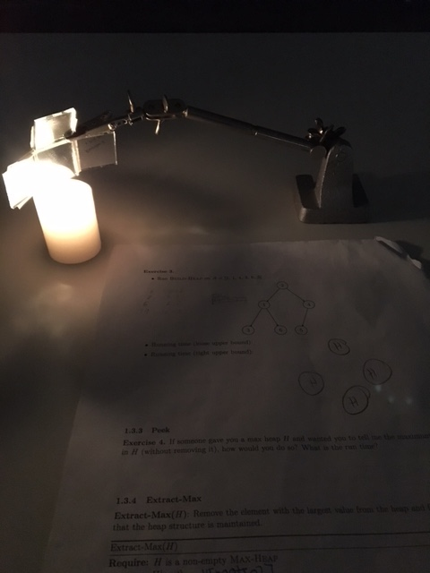
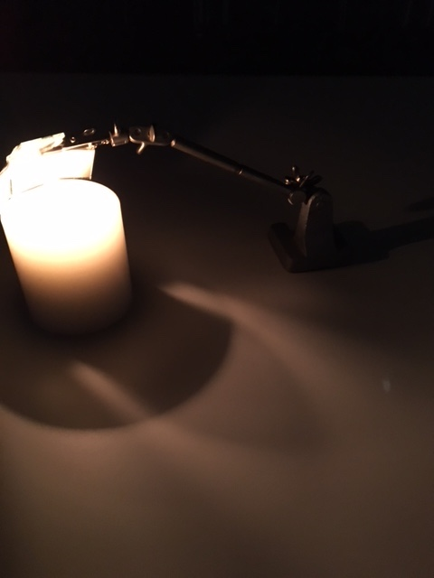
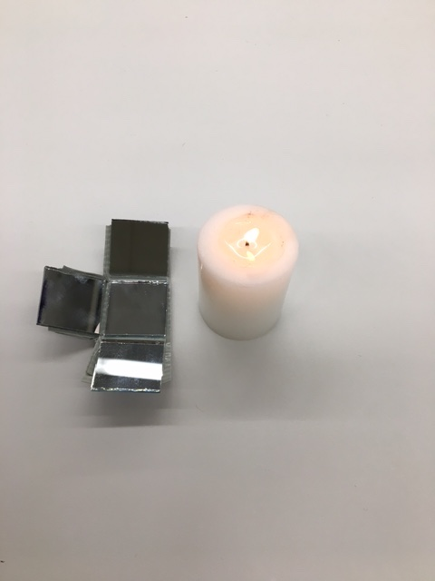
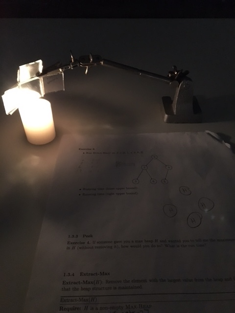
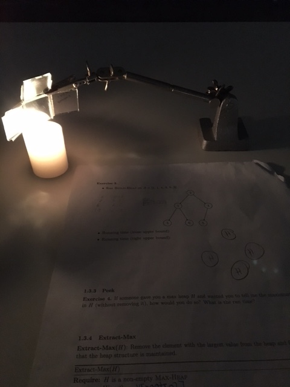
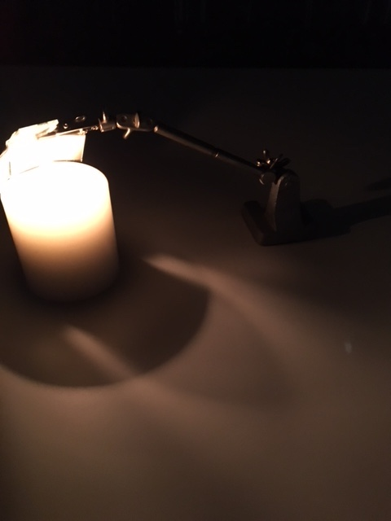
Unfortunately, this piece did not seem to make any meaningful difference. After that idea failed, I tried two more ideas with foil, and one or two simple mirror arrangements.
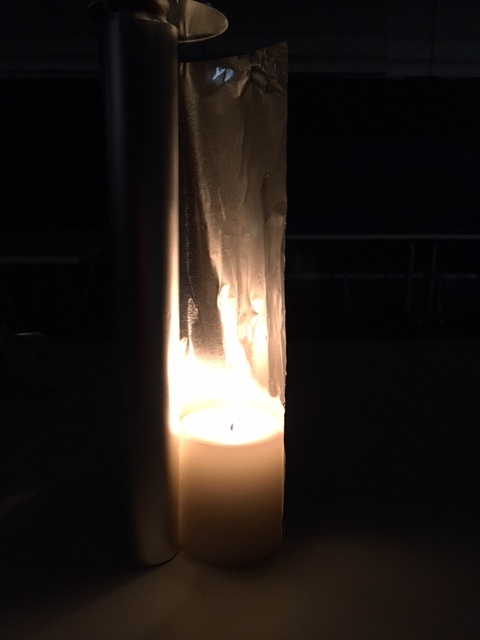 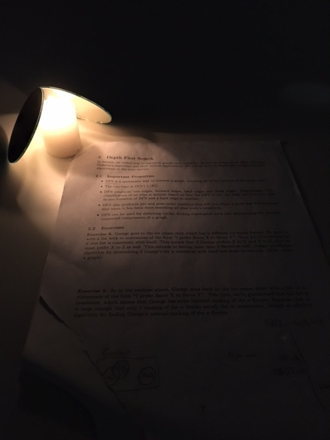After this experimentation, I chose to further develop the second potential focus -- aesthetics (most specifically, light refraction). Here, I iterated on mirror placement, number and angle.
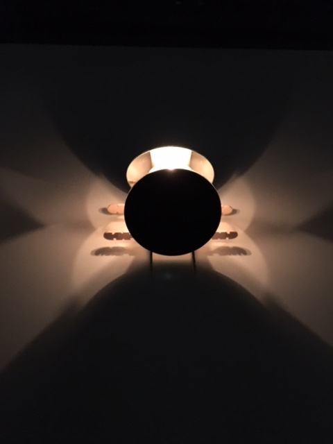 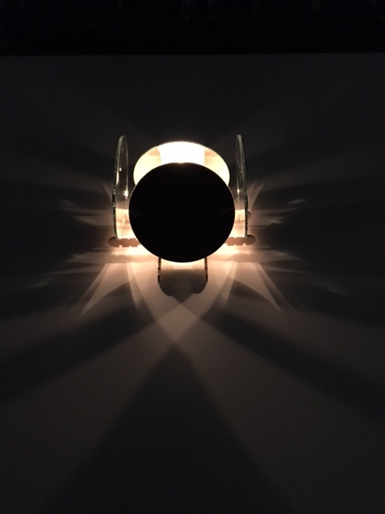 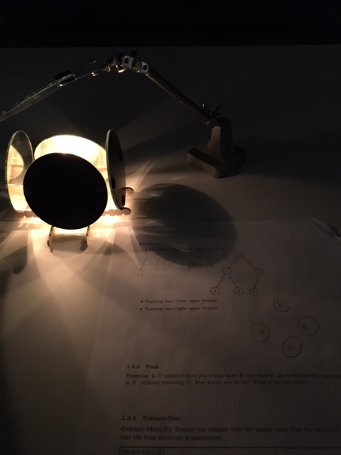 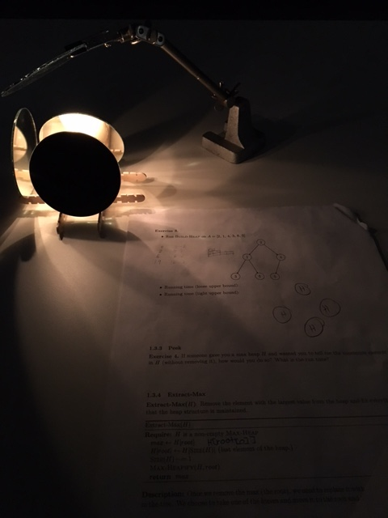Next, I decided to add a few more candles, in order to iterate on brightness.
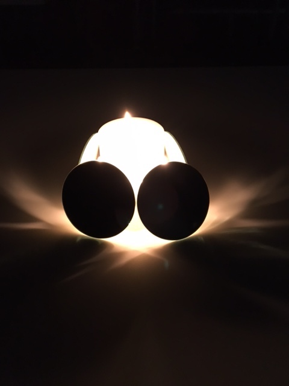